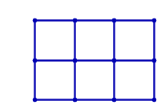
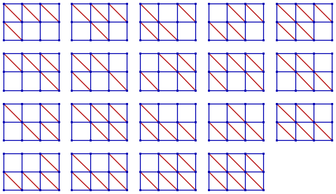

Recall that a graph is a collection of vertices and edges connecting the vertices, and that two vertices connected by an edge are called adjacent.
Graphs can be embedded in Euclidean space by associating each vertex with a point in the Euclidean space.
A flexible graph is an embedding of a graph where it is possible to move one or more vertices continuously so that the distance between at least two nonadjacent vertices is altered while the distances between each pair of adjacent vertices is kept constant.
A rigid graph is an embedding of a graph which is not flexible.
Informally, a graph is rigid if by replacing the vertices with fully rotating hinges and the edges with rods that are unbending and inelastic, no parts of the graph can be moved independently from the rest of the graph.
The grid graphs embedded in the Euclidean plane are not rigid, as the following animation demonstrates:

However, one can make them rigid by adding diagonal edges to the cells. For example, for the $2\times 3$ grid graph, there are $19$ ways to make the graph rigid:

Note that for the purposes of this problem, we do not consider changing the orientation of a diagonal edge or adding both diagonal edges to a cell as a different way of making a grid graph rigid.
Let $R(m,n)$ be the number of ways to make the $m \times n$ grid graph rigid.
E.g. $R(2,3) = 19$ and $R(5,5) = 23679901$.
Define $S(N)$ as $\sum R(i,j)$ for $1 \leq i, j \leq N$.
E.g. $S(5) = 25021721$.
Find $S(100)$, give your answer modulo $1000000033$.
solve(max_limit=5) → █solve(max_limit=100) → █Solution pending... the mathematician is still thinking.
Nothing here yet - come back when the dust has settled.